Levels and clipping
Record too quietly and you fight hiss forever. Record too loud and it’s broken for good. This lesson is about the one knob that decides which, and where to set it.
Start here
Which one can you fix?
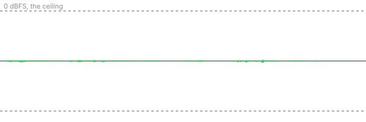
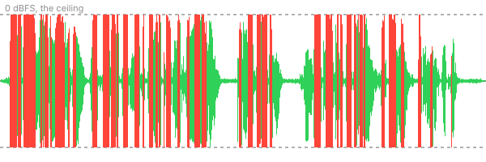
One of these was recorded too quietly. One was recorded too loud. Which one can you rescue in the edit?
Try it
Set the level yourself.
This is a real voice going through a pretend recorder. The Record level slider is the knob on the recorder. Whatever it does gets saved into the file. The Volume in the edit slider is what you’d change later in Premiere. Green is a good level. Red means it clipped.
What you just did
Reading the meter.
Digital audio has a hard ceiling. It’s called 0 dBFS (decibels full scale), and nothing can be recorded louder than it. Meters count down from the ceiling, so the numbers are negative. −6 means six decibels below the top.
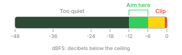
Why not right up at 0? Because people get louder without warning. They laugh, they get excited, they lean in. The space between −6 and 0 is room for that. Why not way down at −30? Because every recorder adds a little hiss of its own. A strong signal buries it. A weak one makes you turn it up later, hiss and all.
Up close
What clipping actually is.
Zoom way in on a sound wave and it’s a smooth up-and-down line. Send it in too loud and the recorder can’t follow it past the ceiling, so it draws a flat line instead. Those flat tops are what you hear as crackle.
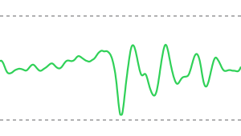
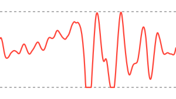
The recorder threw away the part of the wave above the ceiling. Turning it down later can’t put back what was never saved. Repair plug-ins can guess at the missing tops and soften it a little. Another take is still the real fix.
One caveat. Some newer recorders save in 32-bit float, which holds so much headroom that they’re very hard to clip. Most phones and cameras don’t record that way, so set your level like it matters. It usually does.
Where the knob is
Every recorder has one.
It goes by different names: gain, input level, record level, audio level. It always comes before the file gets saved, and that’s the one you set.
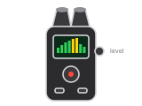
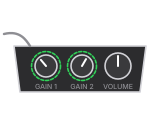
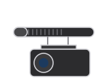
The best knob of all
Distance.
A mic close to the mouth hears a lot of voice and not much room. Move it farther away and you have to turn the level up to get the same voice, and the room, the air conditioner and the traffic come up with it. A clip-on lav mic six inches from the mouth beats an expensive mic across the room.
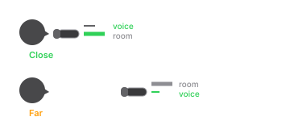
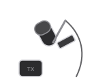
Try it at home
Three takes with your phone.
Use any recording app on your phone, then drop the files into Premiere (or any editor) and look at the waveforms side by side.
- Hold the phone at arm’s length and say one sentence at a normal volume.
- Hold it a hand-width from your mouth and say the same sentence the same way.
- Stay close and say it again, really loudly. Then laugh into it.
- Line up the three waveforms. Which one looks like each of these?
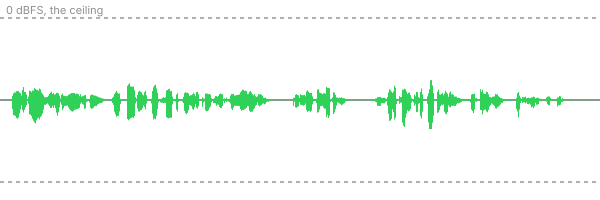
Most phone apps set the level automatically and duck when you get loud, so your clipped take might not clip. That’s a good reason to learn an app that lets you set it yourself.
Five questions
Check yourself.
Up next in Sound
Microphones and pickup patterns.
Why a lav, a shotgun and a phone hear the same room so differently. That lesson isn’t built yet. If you’d like to hear when it is, get the weekly email.
The voice is the opening of a LibriVox recording of the Gettysburg Address, which is in the public domain. Thank you to its volunteer reader. The Amazon links are searches, not recommendations of one brand.